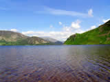
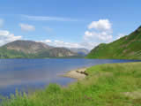
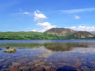
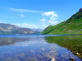
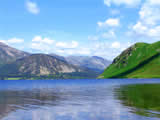
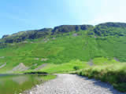
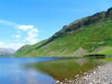
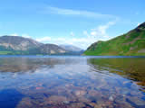
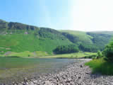

Ennerdale Water - There is road access via the village of Ennerdale Bridge to a car-park within 300 metres of the shore. From here, a graded path suitable for pushchairs and wheelchairs leads to the lake edge and a footbridge from where the most magnificent views of the waters and surrounding mountains are there to be enjoyed.
Ennerdale Water was originally called Broadwater before being turned into a reservoir over a century ago to supply the growing populations of the West Cumbrian coastal towns.
The 2 ½ mile long, ¾ mile wide, 150 feet deep water is surrounded by lofty hills and mountains in a heavily wooded valley where red squirrel and deer may be seen.
This is ideal territory for those seeking seclusion on walks and climbs in a natural unspoiled environment. The crags and rock faces of Pillar Rock, Kern Knotts and Napes Needle are a challenge to climbers, and many of the walks are not suitable unless you are fit and wearing appropriate clothing. Even the low level walk around the lake can take several hours.
Travellers on Alfred Wainwrights coast to coast walk from St; Bees in the west, to Robin Hoods Bay on England's east coast, often take advantage of the local Youth Hostels for overnight rest.
The hamlet of Eden Bridge is close by. The chapel is mentioned in William Wordsworth's poem, 'The Brothers'.
"In our churchyard
Is neither epitaph nor monument
Tombstone nor name
Only the turf we tread
And a few natural graves."
Following a suggestion to build a railway along the length of the valley the poet was outraged and wrote "Is there no spot of English ground secure from rash assault"; echoes of his opposition to the extension of the line from Windermere to Keswick.
The Whitehaven-Ennerdale Cycle Path is popular in the summer, and, mountain-bikers will not be disappointed by what the tracks have to offer.
There are few places to stay in the immediate area. Cockermouth and Cleator Moor are the nearest towns of any size with all types of accommodation available.
The main bus-stop is in Buttermere, followed by a lengthy walk over the fells, but the Ennerdale Rambler operates from Cockermouth to Ennerdale Bridge during July/August. You are advised to enquire at the Tourist Information Centres for additional services.
Every September,the nearby town of Egremont presents the annual "Crab Fayre". One of the events is the "World Gurning Championships". Held since medieval times, the objective is for contestants to "pull" the ugliest face through a horse's collar.
Click on the photographs for a larger image.
All images open in a new window.
All images are 800x 600 resolution and may take a long time to download on slower internet connections.
For larger images (1024x768), please visit our
computer wallpapers section.
  
  
  